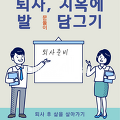
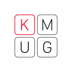
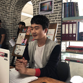
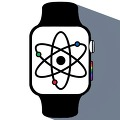
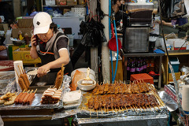
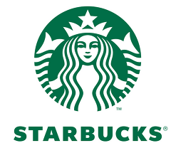
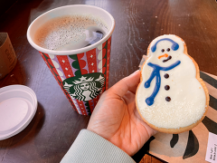
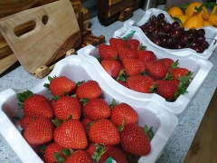

글이 작품이 되는 공간, 브런치
브런치에 담긴 아름다운 작품을 감상해 보세요.
그리고 다시 꺼내 보세요.
서랍 속 간직하고 있는 글과 감성을.
BRUNCH KEYWORD
키워드로 분류된 다양한 글 모음BRUNCH WRITERS
브런치 추천 작가- 여행하는 기획자 출간작가 UX 박사과정생이자 10년차 서비스기획자.흩어지는 순간을 기억하고자 기록합니다.
-  문돌이 개발자 개발하는 문돌이. 문과출신으로 금융권에서 IT 개발자로 일합니다. / 연락처 : moondolit@gma
-  케이머그 KMUG편집장 KMUG 애플에 대한 모든 것. 케이머그 김영권의 Apple 관련 글. 知識記錄
-  비범한츈 디자이너 Apple을 좋아하는 Designer, 모두를 위한 프레젠테이션 디자인 철학을 전달합니다
-  S Genius 에디터 [IT 발전의 시대에 산다는 것, 우리는 최고의 순간을 살고 있습니다.] 안녕하세요 Flipboard에서 IT 매거진 큐레이터로 활동 중이며, 애플유저 그룹을 운영하는 관리자입니다
- Pen 잡은 루이스 잡다한 칼럼니스트 가끔 글을 씁니다. 잡다하게!

RECOMMENDED ARTICLES
브런치의 다양한 글을 만나보세요.-

맛과 정이 넘치는, 제주 모슬포 대정오일시장
"대정읍에는 두 개의 시장이 있다. 모슬포중앙시장과 닷새마다 대정오일시장이 그것이다. 대정읍내 복판에 자리한 모슬포중앙시장은 상설이지만 점포 수가 채 50개가 안 되는 소형시장이다. 게다가 인근에 대형마트들이 산재해 있어 시장 안은 늘 조용한 편이다.하지만, 매달 1, 6일로 끝나는 날이 되면 대정읍이 들썩거린다. 제주도 서부지역에서 제일 크다는 대정오일장이"
by 트래비 매거진 -

커피 한 잔에 스타벅스 주식 한 주(SBUX)
"*본 글은 투자 권유가 아니며 투자와 관련되어 발생하는 모든 일에 대한 책임은 투자자 본인에게 있습니다. 미리 보는 연구 결과 지난해 3월, COVID-19로 인해 주식 시장이 폭싹 주저앉았다. 2월 고점인 약 2255 포인트에서 3월 저점인 약 1140 포인트까지 약 49% 하락했다. 그러나 몇 달 후 7월에 전고점을 탈환했고 11월에 역사적 고점을 돌파"
by 송곳니 -
 모닝빵 재발견
모닝빵 재발견
"막내가 좋아하는 모닝빵을 골랐다. 나란히 2개씩 5줄, 열 개의 빵이 가지런히 비닐봉지에 담겼다. 조금만 힘을 가하면 납작 호떡이 되어 버릴 것 같다. 조금 전 서점에서 산 큰아이의 기말고사 영어 문제집과 과학잡지 사이에 눌려버릴까 조심조심했다. 집 현관문을 열어 식탁 위에 장바구니가 놓일 때까지 지금의 모양이 변하지 않아야 한다. 찌그러진 모닝빵은 다 쓴"
by 오진미 -

스타벅스에서 톨 사이즈 주문하다 까여본 적 있나요?
"맥시멀 리스트 남편이 또 뭔가를 샀다. 사촌 집에서 본 크롬캐스트를 사서 HBO로 요즘 핫하다는 <듄>을 봤다. 아주 먼 미래의 이야기라 주인공이 걸어 다니면 조명이 따라다닌다. 티모시가 나오는데도 불구하고 나는 중간에 박차고 나왔다. 아이맥스로 봐야 재밌다는 걸 집에서 봐서 그런 걸까? 이런 대단한 세계관을 가진 멋진 영화보다 나는 솔직히 올리버 쌤의 "
by 보리차 -

살이 찌면 해야 하는 일
"살이 쪘다 먹는 입을 때려야 할까? 아님 자제하지 못한 이성을 탓하며 머리를 쥐어박아야 할까? 배고픈 소크라테스가 될 생각은 없었지만 그렇다고 배부른 돼지가 되기는 더욱 싫었는데 자꾸만 나 자신이 배부른 돼지가 되고 있음을 느낀다. 몸의 변화를 몰랐을 때는 남편이 날보고 '먹는 욕심이 많은 사람'이라고 놀려도 웃을 수 있었다. 본인은 나보다 더 먹는 사람이"
by 조선여인 -
계란말이를 하며
"요즘 금란이고 계란의 몸값이 비싸졌다. 그러거나 말거나 난 혼자 사는 1인 가구, 그래서 하루를 먹기에는 계란이 제일 좋다. 그래서 집 근처 대형 슈퍼에 가서 10개들이 계란을 샀다. 총총하게 있는 계란을 보면서 마음이 흐뭇해졌다. 귀찮아서 계속 참치캔으로 먹으며 연명하던 난 오랜만에 계란말이를 하기로 했다. 사실 계란말이를 먹을 생각이 없었는데 어제 유튜"
by 조선여인 -
맛과 정이 넘치는, 제주 모슬포 대정오일시장
"대정읍에는 두 개의 시장이 있다. 모슬포중앙시장과 닷새마다 대정오일시장이 그것이다. 대정읍내 복판에 자리한 모슬포중앙시장은 상설이지만 점포 수가 채 50개가 안 되는 소형시장이다. 게다가 인근에 대형마트들이 산재해 있어 시장 안은 늘 조용한 편이다.하지만, 매달 1, 6일로 끝나는 날이 되면 대정읍이 들썩거린다. 제주도 서부지역에서 제일 크다는 대정오일장이"
by 트래비 매거진 -
커피 한 잔에 스타벅스 주식 한 주(SBUX)
"*본 글은 투자 권유가 아니며 투자와 관련되어 발생하는 모든 일에 대한 책임은 투자자 본인에게 있습니다. 미리 보는 연구 결과 지난해 3월, COVID-19로 인해 주식 시장이 폭싹 주저앉았다. 2월 고점인 약 2255 포인트에서 3월 저점인 약 1140 포인트까지 약 49% 하락했다. 그러나 몇 달 후 7월에 전고점을 탈환했고 11월에 역사적 고점을 돌파"
by 송곳니